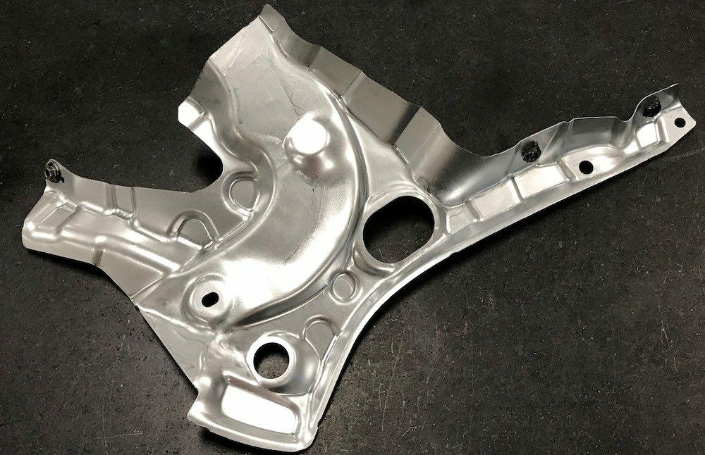
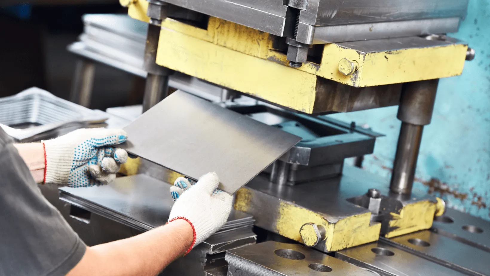

Sheet Metal Stamping & Forming

Metal stamping is a commonly used method when manufacturing parts out of sheet metal. While generally reserved for production parts it can be used to make complex shapes quickly and efficiently. Stamping is seen frequently in the automotive industry for panels and braces. As a very cost effective method of manufacrting stamping removes the material waste of most subtracive processes.

Stamped parts are made by placing sheet metal onto a precise, specially designed die, while a matching punch presses forcefully into the material, forming it into the desired shape. This controlled deformation allows manufacturers to produce strong and consistent parts at high speed, making stamping ideal for large scale production where accuracy and repeatability are essential.
After stamping, parts may also undergo secondary processes to improve performance or appearance. These can include deburring to remove sharp edges, heat treatment to enhance strength, or surface finishing such as coating to prevent corrosion or simply painting. These finishing steps ensure that the final product meets both functional and aesthetic requirements, making metal stamping a complete manufacturing solution.